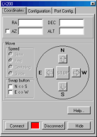
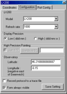
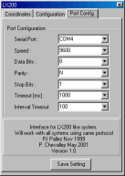

|
This plugin can be used with LX200, Autostar,
Magellan I/II and other systems using the LX200 protocol.
Please refer to the manufacturer information to connect the telescope
to the computer and power on the telescope. Also perform now the initialization
procedure for your telescope, this must be done before to connect to the
program.
Then use the main menu Telescope to
select the Meade plugin and start the interface. If you are asked to change
the program time to auto-refresh reply Yes. If you observe by day time
a warning is issued about accidentally pointing the telescope to the Sun,
please be very careful with that. The following window is displayed :

For the first time use you need to provide some configuration
information.
Click the "Connect button", the light must change to green
and the telescope coordinates are displayed at the top of the screen.
You can now close the interface window by clicking the "Hide"
button.
Refere to the main menu Telescope help
to learn how to show the telescope position on the chart or to use the
Goto facility.
Remember you can refine the local precision by using "Sync current
object" on a nearby star at any time.
You can also use the virtual pad to move the telescope around, be careful
the select the right model in the configurtion before to use this function.
If you use a LX200 with the high precision pointing mode the button to
continue the slew is also here.
Interface configuration

Select the telescope model you use, if your model is not listed consult
your documentation to find a compatible model, if you find none select
the LX200 model if slewing is supported or Magellan II if not.
The Refresh Rate is the amount of time (in milisecond) that elapse between
two position query to the interface. Use a smaller value for a smoother
cursor movement if your telescope accept that and if your computer as
enough power. Use a larger value to use less computer ressource or if
your tescope as a limited output rate.
Select the precision used to transfert the data between the telescope
and the program, this may help to solve some communication problem.
Select if you want to use the LX200 High Precision Pointing, this can
be checked only after you connect to the telescope.
You don't need to set the observatory coordinates as this is automatically
done from the location defined in Cartes du Ciel.
In the case of problem with the interface you can trace the protocol
to a file by checking "Record protocol to a trace file".
The last check box let you choice if you want this window always visible
at the top of the other.
Communication port configuration

Select the serial port (COM1 to COM8) where the telescope is connected.
Set other options (speed, data, parity and stop) according to the manufacturer
informations. Generally LX200, Autostar and Magelan II use 9600,8,N,1
but you may change to 1200, 8, N,1 and Timeout: 500ms for the Magelan
I.
Change the timeout values only if you encounter communication problem
and after identifying the problem with the trace file. Do not set the
timeout to a value greater than the refresh rate in the preceding screen.
Click the Save Setting button to keep your configuration for the next
run.
Also save the default options in Cartes du Ciel menu to keep your interface
choice.
|